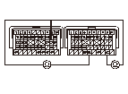
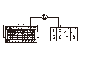
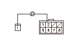
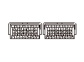
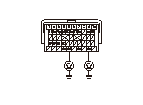

DTC P0977 (8-4)
DTC P0977（8-4）:
シフト コントロールSOL.V.B断線
DTC再表示の点検
1-1
HDSでDTCのクリアを行う
1-2
エンジンを始動する
1-3
DポジションD3ドライブ モードで
1速
から
3速
まで変速させて走行し、
3速
で1秒間以上走行し、減速して止める
1-4
DTC P0977（8-4）の表示を確認する
◆ DTC P0977（8-4）が再度表示されるか
YES
-
ステップ
3
へ進む
NO
-
ステップ
2
へ進む
シフト コントロールSOL.V.Bのファンクション テスト
2-1
HDSのATテスト モード メニューから各種テストを選択する
2-2
各種テスト メニューのシフト ソレノイドBでシフト コントロールSOL.V.Bの点検を行う
2-3
エンジンを始動する
2-4
DポジションD3ドライブ モードで
1速
から
3速
まで変速させて走行し、
3速
で1秒間以上走行し、減速して止める
2-5
HDSのATテスト モード メニューから、DTCs/フリーズ データのDTCモニタ ツールでDTC
P0977
（8-4）のOBDステータスを確認する
◆ 故障判定か
YES
-
ステップ
3
へ進む
NO
-
一時的な故障
OBDステータスが未完了の場合は再点検する
シフト コントロールSOL.V.Bの抵抗値の確認
3-1
イグニッション スイッチをOFFにする
3-2
HDSでSCS回路の短絡を行う
3-3
PGM-FI ECUカプラB（49P）およびカプラC（49P）の接続を外す
3-4
PGM-FI ECUカプラB（49P）のNo.27端子とカプラC（49P）のNo.44またはNo.48端子間の抵抗値を測定する
◆ 12－25Ωか
YES
-
ステップ
6
へ進む
NO
-
ステップ
4
へ進む

シフト コントロールSOL.V.B回路の断線点検
4-1
シフト ソレノイド ハーネス カプラの接続を外す
4-2
PGM-FI ECUカプラB（49P）のNo.27端子とシフト ソレノイド ハーネス カプラのNo.2端子間の導通を点検する
◆ 導通があるか
YES
-
ステップ
5
へ進む
NO
-
PGM-FI ECUカプラB（49P）のNo.27端子とシフト ソレノイド ハーネス カプラ間のコードの断線、故障修理完了後ステップ
8
へ進む

シフト ソレノイド ハーネスのSHBコードの断線点検
5-1
シフト ソレノイド ハーネス カプラを取外す
5-2
シフト ソレノイド ハーネス カプラのNo.2端子とシフト コントロールSOL.V.Bカプラ端子間の導通を点検する
◆ 導通があるか
YES
-
シフト コントロールSOL.V.Bを交換する
、交換作業終了後ステップ
8
へ進む
NO
-
シフト ソレノイド ハーネスを交換する
、交換作業終了後ステップ
8
へ進む

VBSOL電源の点検
6-1
PGM-FI ECUカプラA（49P）の接続を外す
6-2
イグニッション スイッチをON（
II
）にする
6-3
PGM-FI ECUカプラA（49P）のNo.1端子とカプラC（49P）のNo.44またはNo.48端子間の電圧を測定する
◆ バッテリ電圧か
YES
-
PGM-FI ECUのプログラムが最新でない場合は、
最新バージョンにアップデートする
、プログラムが最新バージョンの場合は、
新品のPGM-FI ECUに交換して
再点検する
NO
-
ステップ
7
へ進む

PGM-FI ECUのLG回路の断線点検
7-1
イグニッション スイッチをOFFにする
7-2
PGM-FI ECUカプラC（49P）のNo.44端子とボディ アース間、No.48端子とボディ アース間の導通を点検する
◆ 導通があるか
YES
-
PGM-FI ECUカプラA（49P）のNo.1端子とヒューズ ボックス間のコードの断線または短絡、またはヒューズ ボックス内No.7（10A）ヒューズの溶断
NO
-
PGM-FI ECUカプラC（49P）のNo.44端子またはNo.48端子とアース（G101）間のコードの断線、またはアース（G101）の不良、故障修理完了後ステップ
8
へ進む
故障修理完了の確認
8-1
HDSでDTCのクリアを行う
8-2
DポジションD3ドライブ モードの
1速
で1秒間以上走行し、
3速
まで加速して
3速
で1秒間以上走行し、減速して止める
8-3
HDSのATテスト モード メニューから、DTCs/フリーズ データのDTCモニタ ツールでDTC
P0977
（8-4）のOBDステータスを確認する
◆ 正常判定か
YES
-
故障修理完了
NO
-
ステップ
1
から再点検する
OBDステータスが未完了の場合は再点検する
